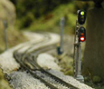
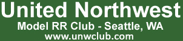
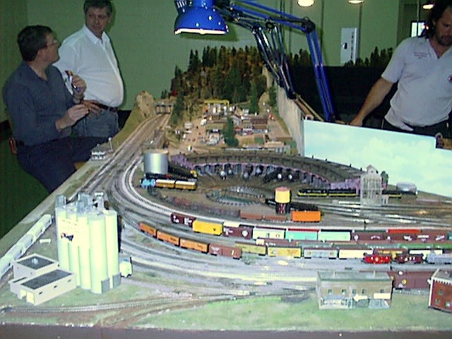
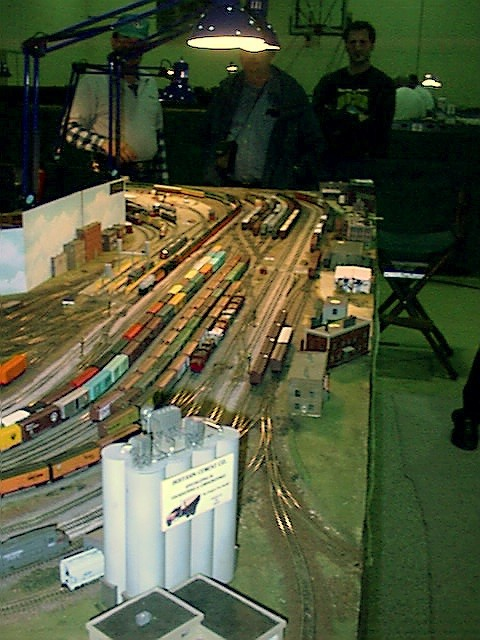
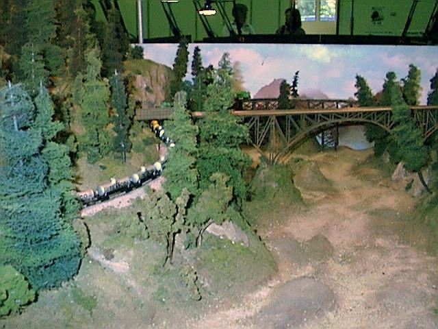

|

|

|
UNW Home
News
Events
Club History
The Layout
Photo Gallery
|
UNW "Legacy" Division
- The layout is N scale (1:160). An N scale locomotive would have to be magnified 160 times to equal the real thing.
- The present layout has been a work in progress for almost 25 years
- Currently it is roughly 14' x 36', and separates into modules for easy take-down and transport
-
The layout does not follow a particular prototype or era, but instead takes the best of what we know to be Pacific Northwest railroading
- The layout has operational DCC on the outside "low line" main. The system is North Coast Engineering
(NCE).
Yard and Engine Facilities:
- One end encompasses the massive yard and engine facilities, where we build and break up trains.


Mountain Area:
- The other end is a mountainous territory containing bridges, tunnels, loops, and a valley.

Mainlines:
- There are two mainlines, one that is known as the "High Line", and the other that is referred to as the "Low Line". Usually we will run passenger trains on the twisting and grade-filled High Line, and run longer freight trains on the flatter Low Line.
We also have a host of other smaller switching opportunities to keep everyone busy and entertained.
UNW "NTRAK Division"
|